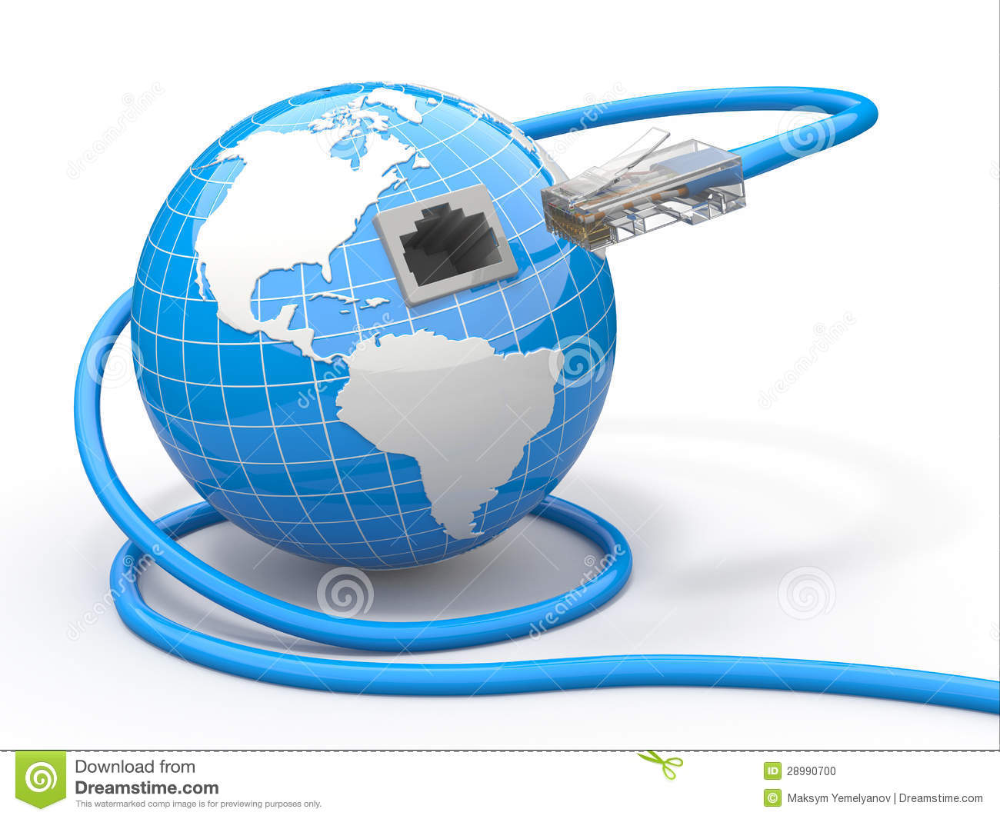

Glosario
- CSS
-
CSS es un lenguaje de hojas de estilos creado para controlar el aspecto o
presentación de los documentos electrónicos definidos con HTML y XHTML.
CSS es la mejor forma de separar los contenidos y su presentación y es
imprescindible para crear páginas web complejas.

- Ethernet
-
Ethernet es la tecnología de red de área local (LAN) más ampliamente instalada.
Ethernet es un protocolo de capa de enlace en la pila de TCP/IP, que describe cómo
los dispositivos en red pueden formatear datos para su transmisión a otros dispositivos
de red en el mismo segmento de red y cómo colocarlos en la conexión de red.

- Framework
-
Marco de trabajo, es el esquema o estructura que se establece y que se aprovecha para desarrollar
y organizar un software determinado. Es útil, por ejemplo, para evitar el tener que repetir
código para realizar funciones habituales en un rango de herramientas, como puede ser el acceder
a bases de datos o realizar llamadas a Internet.